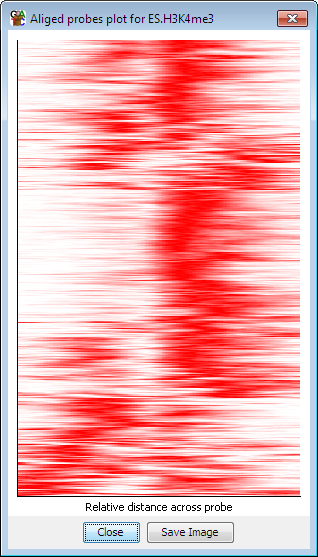
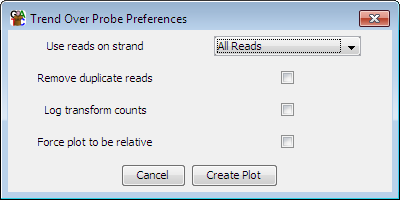

The probe trend plot is a useful way to see if there is a universal trend which runs over the length of an average probe in a probe list. The aligned probes plot is a quick way to see if there are subsets of probes within a list which display a pattern over their length.

Each horizontal line on the plot represents one probe. Because of the complexity of calculating these plots, and of limited screen space there is a limit of 1000 probes which can be displayed. If you use a list containing more than 1000 probes then only the first 1000 probes will be used.
The density of colour across each horizontal line reflects the density of reads across the probe. The density on each line is normalised to be independent of the number of reads in that probe.
